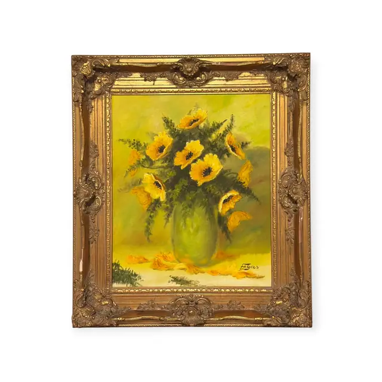
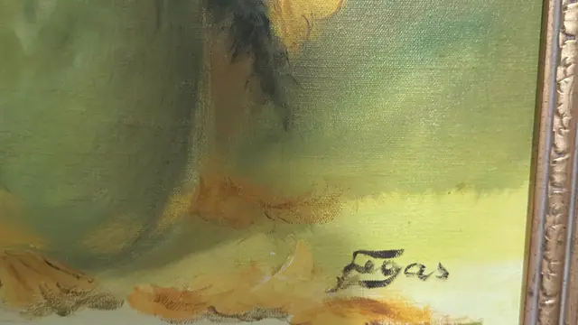
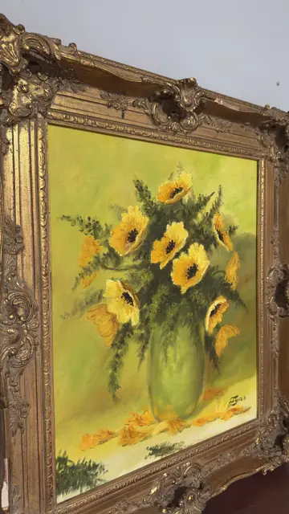
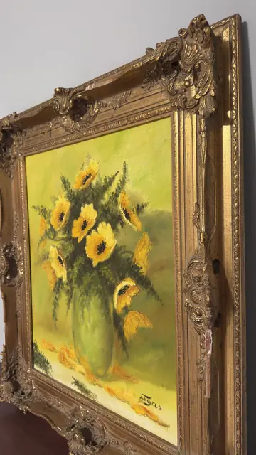

Paintings & Prints
Yellow Poppies in a Green Vase, Egas, Signed, Framed
Egas · third quarter of the 20th century
Price Upon Request




About the Item
Egas. A bright still life set against a chartreuse and sage ground: a bulbous pale green vase holds a loose bunch of yellow poppies with dark seed-heart centres, their crumpled petals painted in buttery strokes over feathery blue-green foliage. Two or three blooms and a scatter of petals lie on the pale table in front. The palette is deliberately narrow - cadmium and lemon yellow against every shade of green - and the paint is applied wet-into-wet with visible brush marks. Set in a heavy ornate gold rococo frame with pierced corner scrolls. Medium: oil on canvas. Signed lower right of the canvas, in dark paint, reading "Egas". Inscribed on the reverse or mount: Egas (painted signature, lower right of the canvas). Condition: Frame has rubbing and small chips to the gesso ornament, especially at the corners; canvas appears sound with no visible craquelure.
Details
- Creator:
- Egas
- Creation Year:
- third quarter of the 20th century
- Dimensions:
- Height: 32.6 in (82.8 cm)
Width: 28.0 in (71.12 cm)
outside of frame - Medium:
- oil on canvas
- Period:
- 20Th
- Condition:
- Offered in the condition shown in the photographs.
- Reference Number:
- VO-140
- Documentation:
- no certificate photographed
- Gallery Location:
- Egas (painted signature, lower right of the canvas)